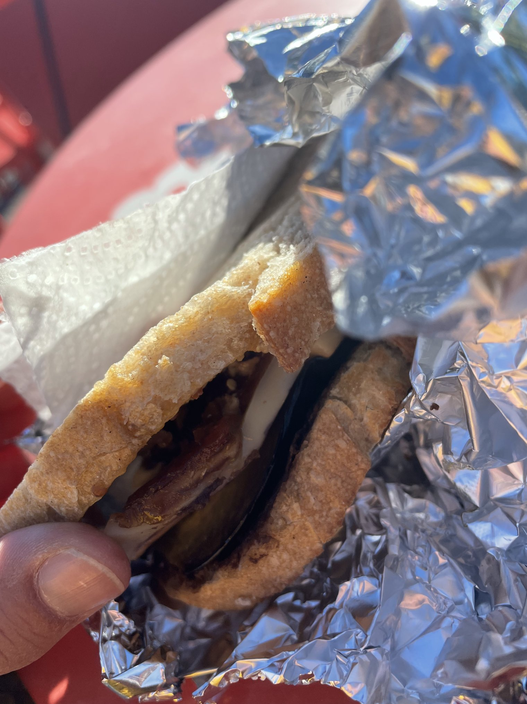

Sándwich de comté, berenjena y dátiles con olivada y mostaza
Ingredients
1×
- 0.5 berenjena
- aceite de oliva
- sal
- 2 rebanadas de pan
- 1 cda de olivada
- 1 cdta de mostaza
- 3 lonchas de comté
- 2 dátiles

Preparación
Paso 1
Cortar 0.5 berenjena en rodajas y dorarlas en la sartén con un poco de aceite de oliva y sal.
Paso 2
Untar 2 rebanadas de pan con 1 cda de olivada y 1 cdta de mostaza.
Paso 3
Montar con la berenjena, 3 lonchas de comté y 2 dátiles sin hueso cortados en trozos.